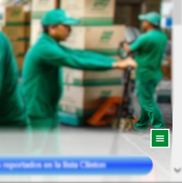

Tu misión es contestar corrrectamente las preguntas que aparecerán
Cuando empieces a jugar veras el contador de puntos vacío, pero no te preocupes se llenará conforme vayas avanzando en el juego
Para avanzar debes responder correctamente las preguntas, yo te diré cuando has contestado bien o mal
En la zona inferior derecha, junto a la pregunta encontraras un botón azul con 3 lineas blancas como este

Oprímelo y así accederás a información que será de ayuda para aprender más sobre qué es y cómo prevenir el lavado de activos y la financiación del terrorismo,
Nuestros recursos son limitados así que esfuérzate mucho para evitar perder el juego
Si logras contestar correctamente las preguntas habrás ganado el juego